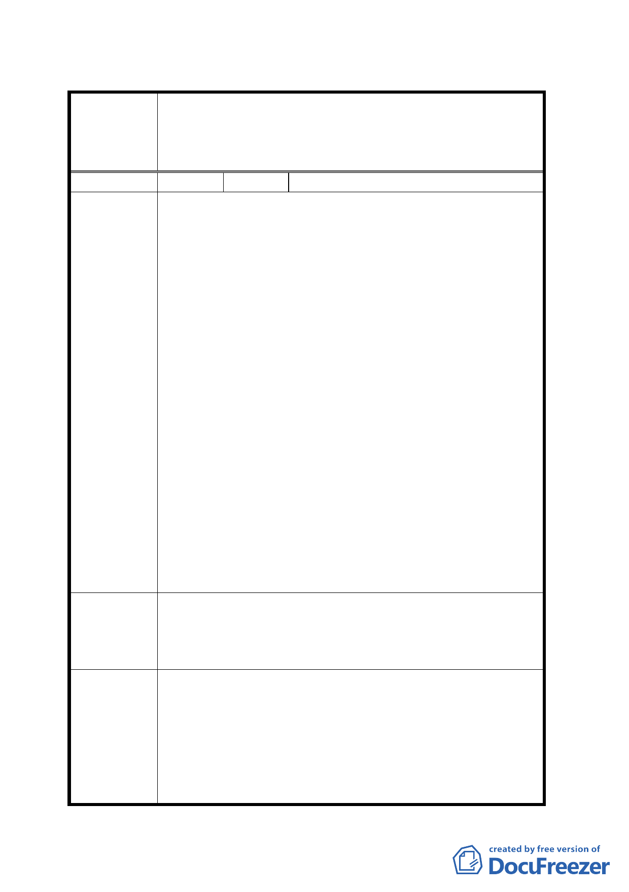

臺北市都市計畫委員會 公民或團體陳情意見綜理表
案名
變更臺北市南港區中南段 2 小段 302-1 地號等機關用地（供
國防部軍備局生產製造中心第 202 廠使用）及保護區為機
關用地（供國家生技研究園區、中央研究院、國防部使用）
主要計畫案
編號
1 陳情人 中研社區協進會陳進華理事長
為配合國軍 202 兵工廠舊址上興建「國家生物科技園
區」，臺北市政府將「規範該園區於後續開發配置時，應留
設園區內之聯絡道路，銜接東側之研究院路、四分溪防汛
道路，與北側穿越忠孝東路銜接興中路之隧道路段，作為
聯絡南港舊庄地區與南港車站之服務性道路」。而此遂道出
口，一處為四分溪防汛道路，一處為研究院路二段 12 巷底
之勤力橋旁。
中研社區協進會全體居民對於市政府擬將遂道出口一
處置於研究院路二段 12 巷底之勤力橋旁，表示堅決反對，
並經理監事會 5 月 15 日決議，請求市府必須將隧道出口遷
陳情理由 離 12 巷底之勤力橋旁，理由如下：
第一，如此重要之隧道出口，不應置於居民所住之巷內，
而應直接連至研究院路等幹道上。
第二，該出口處為中研公園、思亮新村、中研里居民最集
中之處，更是中研院附設幼稚園所在地，原為居民
休憩之場所。市政府將幹道出口置於民眾所居住之
巷內，將擾亂並危及居民和孩童之生活。
第三，四分溪和旁邊之山林，為各類鳥禽棲息所，更是中
研里好山好水之重要屏障，一旦將隧道口置於 12 巷
底，四分溪旁之巷道將成為汽機車往來之孔道，帶
來嚴重之污染與破壞。
我們堅決反對市政府在研究院路 2 段 12 巷底設置隧道
建議辦法
出口。另外，基於環保的理由，中研社區協進會建議為來
隧道內，應設置雙向自行車專用道，鼓勵民眾騎車至南港
車站搭乘捷運，減少汽機車的使用。
本案為主要計畫，本項陳情有關交通動線規劃等建議，係
屬細部計畫內容。
委員會議決
議
本案除計畫書第 7 頁圖二北側基地之土地使用分區現況應
依現行計畫再作修正，以及計畫案名修正為「變更臺北市
南港區中南段 2 小段 302-1 地號等機關用地（供國防部軍備
局生產製造中心第 202 廠使用）及保護區為機關用地（供
國家生技研究園區使用）及機關用地（供中央研究院及國
12